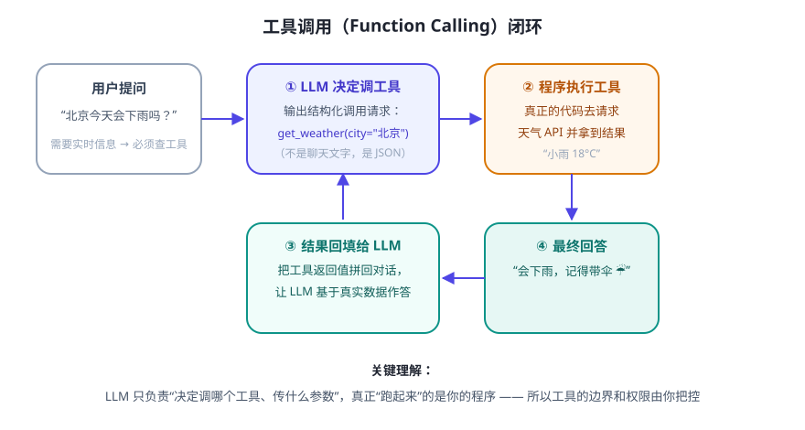

先复习 Day 5 那张图：在 Function Calling 里，模型负责“决定调哪个工具、传什么参数”，真正联网干活的是你写的普通函数。今天我们就写这个“普通函数”，并且不依赖任何 API Key。
回顾：工具在闭环中的位置

我们的工具：get_weather(city)
课程仓库已备好 code/weather_tool.py。它使用免费的 wttr.in 服务，不需要注册和 Key。先跑起来：
python3 code/weather_tool.py 北京 python3 code/weather_tool.py 上海
你会看到类似：上海: 🌦️ +26°C。核心代码只有十几行：
import urllib.parse, urllib.request
def get_weather(city: str) -> str:
if not city.strip():
return "错误：城市不能为空"
q = urllib.parse.quote(city.strip()) # 处理中文
url = f"https://wttr.in/{q}?format=3&lang=zh"
req = urllib.request.Request(url, headers={"User-Agent": "curl/8"})
try:
with urllib.request.urlopen(req, timeout=15) as resp:
return resp.read().decode("utf-8", "replace").strip()
except Exception as e:
return f"查询失败：{e.__class__.__name__}（请检查网络）"
一个“好工具”的四个标准
- 输入简单：只接收必要的参数（城市名）。
- 输出是纯数据/纯文本：方便拼回给 LLM，而不是打印一堆日志。
- 失败不抛异常：网络挂了也返回一句可读的错误，而不是让整个 Agent 崩溃。
- 有超时与限流意识：15 秒超时；别高频调用免费服务。
它离“Agent 的手”还差什么？
只差“大脑”来指挥它。真实 Agent 里，你会把函数写一份“说明书”注册给 LLM：
{ "name": "get_weather", "description": "查询指定城市的实时天气",
"parameters": { "city": { "type": "string", "description": "城市名，如：北京" } } }
用户说“北京热吗？”，LLM 看到说明书后输出 调用 get_weather(city="北京")，你的程序执行并把结果回填给它，它再回答“北京 24°C，不算热”。这一步的“接线”各家平台写法不同，做项目时以所用平台的官方文档为准。
✍️ 今日练习（约 12 分钟）
- 运行
weather_tool.py查 3 个城市，并故意查一个不存在的城市，看错误处理是否友好。 - 给它加一个参数
days（未来 3 天预报），wttr.in 支持?format=4&lang=zh等格式，试试扩展（以 wttr.in 文档为准）。 - 仿照它，写第二个“工具”：
get_news_headlines()（可用任意公开接口，或先返回假数据占位），并写出它的“说明书”JSON。
📌 今日小结
工具的本质就是一个输入简单、输出干净、出错不崩的普通函数
工具 + 说明书把 name/description/parameters 注册给 LLM，它才能“知道”并调用
今天跑通code/weather_tool.py：真正联网查天气，无 Key
下一步Day 11 给 Agent 外接“知识库”（RAG），让它懂你的私有资料